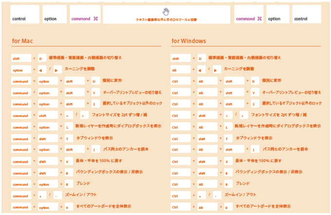

覚えるべきショートカットキー

creativecloud.adobe.com
- 「Ctrlキー（commandキー）」を押すと、一時的に「選択ツール」に切り替わります
- ベジェ曲線のスムーズな描画を可能にするのが、キーボードショートカットです
- 一時的にツールを切り替えながら作業します。（ツールパネルからツールの切り替えを行うと、描画が中断され次の線に繋がりません）
その他のショートカットキー
| ショートカットキー | できること |
|---|---|
| スペースキー | 手のひらツール |
| スペースキー + Ctrl | 拡大ツール |
| スペースキー + Ctrl + Alt | 縮小ツール |
| Ctrl + + | 画面中心に向かって拡大 |
| Ctrl +－ | 画面中心に向かって縮小 |
| Ctrl + 1 | 100％表示 |
| Ctrl + 0 | アートボード表示 |
| Alt + Ctrl + Y | ピクセルプレビュー |
| Shift + Ctrl + W | テンプレートを隠す |
| Shift + Ctrl + H | オートガイド（画面） |
| Shift + Ctrl + U | オートガイド（図形） |
| Shift + Ctrl + Y | テキストのスレッドを隠す |
| Ctrl + Y | アウトライン・プレビュー表示切り替え |
| Ctrl + ￥ | グリッドの表示・非行事切り替え |
| Shift + Ctrl + \ | グリッドにスナップ |
| Alt + Ctrl + \ | ポイントにスナップ |
| Ctrl + U | スマートガイドの表示・非表示 |
| Ctrl + R | 定規の表示・非行事 |
| Tab | ツールバー・パレットの表示・非表示切り替え |
| Shift + Ctrl + D | 透明グリッドを表示 |
| Ctrl + H | 境界を表示・非表示 |
| Ctrl + 5 | ガイドを作成 |
| Ctrl + : | ガイドを表示/非表示 |
| Option + Ctrl + : | ガイドをロック/ロック解除 |
| Shift + Ctrl + B | バウンティボックス非表示（Ver.10以降） |
| Option + Ctrl + G | グラデーションガイドの非表示（Ver.14・CS4以降） |
| Shift + Ctrl + I | 遠近グリッドツール非表示（Ver.15・CS5以降） |